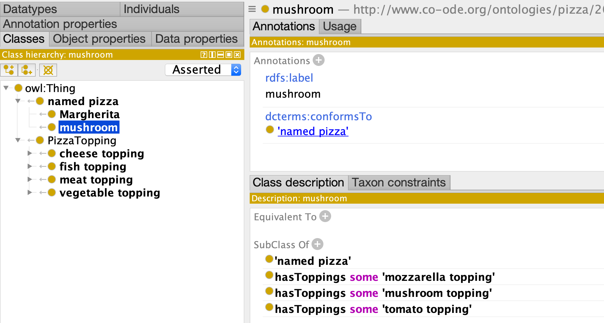

Part 2: Adding Relationships
So far we have made a simple subsumption hierarchy with minimal metadata on each class
We will now extend the model to include relationships, modeled using existential restriction axioms. Specifically, we will add some pizza classes and relate them to toppings via a hasToppings relationships.
Model
pizza02-hasToppings-model.yaml
id: http://www.co-ode.org/ontologies/pizza/2005/10/18/pizza.owl
name: Pizza-Ontology-Metamodel
prefixes:
pizza: http://www.co-ode.org/ontologies/pizza/2005/10/18/pizza.owl#
linkml: https://w3id.org/linkml/
dcterms: http://purl.org/dc/terms/
default_curi_maps:
- semweb_context
default_prefix: pizza
imports:
- linkml:types
classes:
## ---
## this class is introduced here
## ---
NamedPizza:
annotations:
owl: Class
attributes:
## ---
## these attributes are the same as for PizzaTopping
## ---
id:
identifier: true
range: uriorcurie
label:
annotations:
owl: AnnotationAssertion
slot_uri: rdfs:label
conforms_to:
annotations:
owl.fstring: AnnotationAssertion( dcterms:conformsTo {id} pizza:{V} )
slot_uri: dcterms:conformsTo
designates_type: true
subClassOf:
annotations:
owl: SubClassOf
slot_uri: rdfs:subClassOf
range: NamedPizza
## ---
## this attribute is unique to NamedPizza
## ---
hasToppings:
annotations:
owl: ObjectSomeValuesFrom
multivalued: true
range: PizzaTopping
## ---
## copied from part 1
## ---
PizzaTopping:
attributes:
id:
identifier: true
range: uriorcurie
label:
annotations:
owl: AnnotationAssertion
slot_uri: rdfs:label
conforms_to:
annotations:
owl.fstring: AnnotationAssertion( dcterms:conformsTo {id} pizza:{V} )
slot_uri: dcterms:conformsTo
designates_type: true
subClassOf:
annotations:
owl: SubClassOf
slot_uri: rdfs:subClassOf
hasToppings:
singular_name: hasTopping
range: PizzaTopping
multivalued: true
annotations:
owl: ObjectSomeValuesFrom
Note that we have some repetition in the schema, with the same
information about the same attribute repeated in both NamedPizza and
PizzaTopping (although note the difference in range for subClassOf
in both classes). We will return to address this issue later.
Here we introduce a new slot/attribute hasToppings. This has an interpretation of ObjectSomeValuesFrom
Data
Our new data file now has two kinds of records: PizzaToppings and NamedPizzas:
# named pizzas
- id: pizza:NamedPizza
conforms_to: NamedPizza
label: named pizza
- id: pizza:Mushroom
conforms_to: NamedPizza
label: mushroom
subClassOf: pizza:NamedPizza
hasToppings:
- pizza:MozzarellaTopping
- pizza:MushroomTopping
- pizza:TomatoTopping
- id: pizza:Margherita
conforms_to: NamedPizza
label: Margherita
subClassOf: pizza:NamedPizza
hasToppings:
- pizza:MozzarellaTopping
- pizza:TomatoTopping
# toppings
- id: pizza:FishTopping
label: fish topping
conforms_to: PizzaTopping
subClassOf: pizza:PizzaTopping
- id: pizza:MeatTopping
label: meat topping
conforms_to: PizzaTopping
subClassOf: pizza:PizzaTopping
- id: pizza:VegetableTopping
label: vegetable topping
conforms_to: PizzaTopping
subClassOf: pizza:PizzaTopping
- id: pizza:CheeseTopping
label: cheese topping
conforms_to: PizzaTopping
subClassOf: pizza:PizzaTopping
- id: pizza:PepperoniSausageTopping
label: pepperoni sausage topping
conforms_to: PizzaTopping
subClassOf: pizza:MeatTopping
- id: pizza:AnchoviesTopping
label: anchovies topping
conforms_to: PizzaTopping
subClassOf: pizza:FishTopping
- id: pizza:ArtichokeTopping
label: artichoke topping
conforms_to: PizzaTopping
subClassOf: pizza:VegetableTopping
- id: pizza:MushroomTopping
label: mushroom topping
conforms_to: PizzaTopping
subClassOf: pizza:VegetableTopping
- id: pizza:TomatoTopping
label: tomato topping
conforms_to: PizzaTopping
subClassOf: pizza:VegetableTopping
- id: pizza:MozzarellaTopping
label: mozzarella topping
conforms_to: PizzaTopping
subClassOf: pizza:CheeseTopping
Note the hasToppings slot is multivalued, so this is specified as a list.
Output
Ontology( <http://www.co-ode.org/ontologies/pizza/2005/10/18/pizza.owl>
AnnotationAssertion( rdfs:label pizza:Mushroom "mushroom" )
AnnotationAssertion( dcterms:conformsTo pizza:Mushroom pizza:NamedPizza )
SubClassOf( pizza:Mushroom ObjectSomeValuesFrom( pizza:hasToppings pizza:MozzarellaTopping ) )
SubClassOf( pizza:Mushroom ObjectSomeValuesFrom( pizza:hasToppings pizza:MushroomTopping ) )
SubClassOf( pizza:Mushroom ObjectSomeValuesFrom( pizza:hasToppings pizza:TomatoTopping ) )
AnnotationAssertion( rdfs:label pizza:Margherita "Margherita" )
AnnotationAssertion( dcterms:conformsTo pizza:Margherita pizza:NamedPizza )
SubClassOf( pizza:Margherita ObjectSomeValuesFrom( pizza:hasToppings pizza:MozzarellaTopping ) )
SubClassOf( pizza:Margherita ObjectSomeValuesFrom( pizza:hasToppings pizza:TomatoTopping ) )
AnnotationAssertion( rdfs:label pizza:FishTopping "fish topping" )
AnnotationAssertion( dcterms:conformsTo pizza:FishTopping pizza:PizzaTopping )
SubClassOf( pizza:FishTopping pizza:PizzaTopping )
AnnotationAssertion( rdfs:label pizza:MeatTopping "meat topping" )
AnnotationAssertion( dcterms:conformsTo pizza:MeatTopping pizza:PizzaTopping )
SubClassOf( pizza:MeatTopping pizza:PizzaTopping )
AnnotationAssertion( rdfs:label pizza:VegetableTopping "vegetable topping" )
AnnotationAssertion( dcterms:conformsTo pizza:VegetableTopping pizza:PizzaTopping )
SubClassOf( pizza:VegetableTopping pizza:PizzaTopping )
AnnotationAssertion( rdfs:label pizza:CheeseTopping "cheese topping" )
AnnotationAssertion( dcterms:conformsTo pizza:CheeseTopping pizza:PizzaTopping )
SubClassOf( pizza:CheeseTopping pizza:PizzaTopping )
AnnotationAssertion( rdfs:label pizza:PepperoniSausageTopping "pepperoni sausage topping" )
AnnotationAssertion( dcterms:conformsTo pizza:PepperoniSausageTopping pizza:PizzaTopping )
SubClassOf( pizza:PepperoniSausageTopping pizza:MeatTopping )
AnnotationAssertion( rdfs:label pizza:AnchoviesTopping "anchovies topping" )
AnnotationAssertion( dcterms:conformsTo pizza:AnchoviesTopping pizza:PizzaTopping )
SubClassOf( pizza:AnchoviesTopping pizza:FishTopping )
AnnotationAssertion( rdfs:label pizza:ArtichokeTopping "artichoke topping" )
AnnotationAssertion( dcterms:conformsTo pizza:ArtichokeTopping pizza:PizzaTopping )
SubClassOf( pizza:ArtichokeTopping pizza:VegetableTopping )
AnnotationAssertion( rdfs:label pizza:MushroomTopping "mushroom topping" )
AnnotationAssertion( dcterms:conformsTo pizza:MushroomTopping pizza:PizzaTopping )
SubClassOf( pizza:MushroomTopping pizza:VegetableTopping )
AnnotationAssertion( rdfs:label pizza:MozzarellaTopping "mozzarella topping" )
AnnotationAssertion( dcterms:conformsTo pizza:MozzarellaTopping pizza:PizzaTopping )
SubClassOf( pizza:MozzarellaTopping pizza:CheeseTopping )
In Protege:
